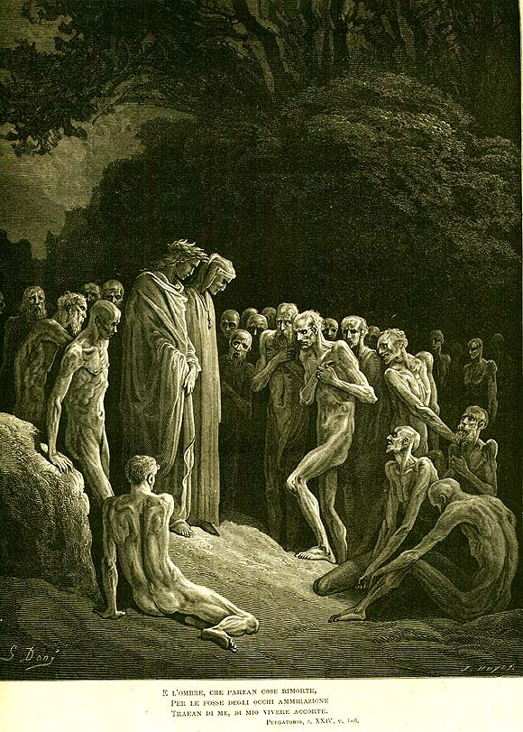

Песнь 24 из 33
Чревоугодие: «сладостный новый стиль»

Кратко
Форезе указывает Данте на других чревоугодников — поэта Бонаджунту да Лукка, папу Мартина IV и прочих. Бонаджунта заговаривает с Данте о поэзии, и тот формулирует суть своей школы — «сладостного нового стиля» (dolce stil nuovo): «Я тот, кто пишет так, как любовь диктует в сердце». Бонаджунта признаёт, что прежних поэтов держал «узел». Звучит пророчество о некоей Джентукке и о грядущем изгнании. Второе дерево (от древа познания) возглашает образцы наказанного чревоугодия; ангел стирает пятое «P».
Главные моменты
- Манифест «сладостного нового стиля»: поэзия послушна любви, что говорит в сердце.
- «Узел», мешавший старой поэтической школе.
- Пророчества о Джентукке и об изгнании Данте.
- Второе дерево с образцами кары за чревоугодие; стёрто пятое «P».
Значение
Поэтологический манифест Данте: подлинное искусство — послушание истинной любви.